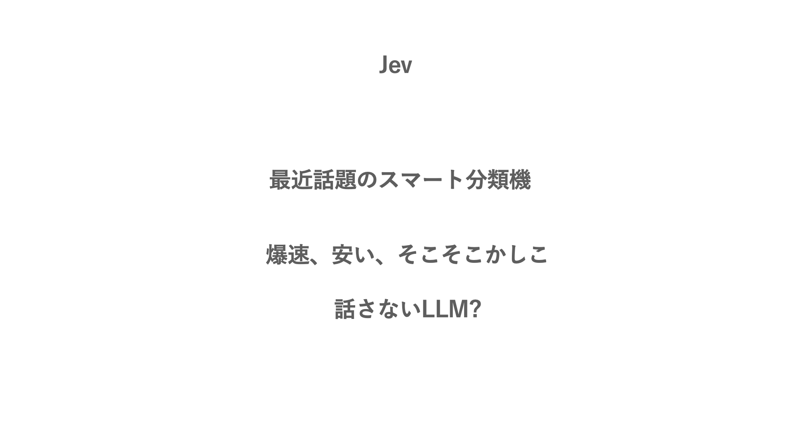
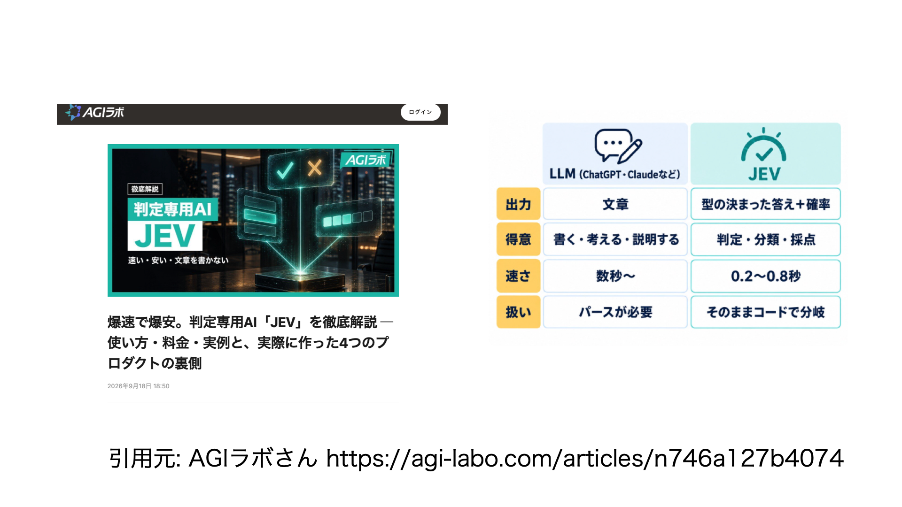
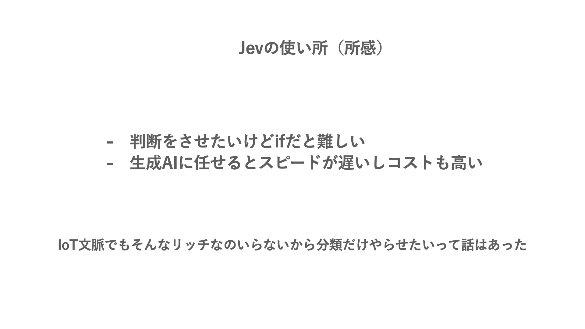
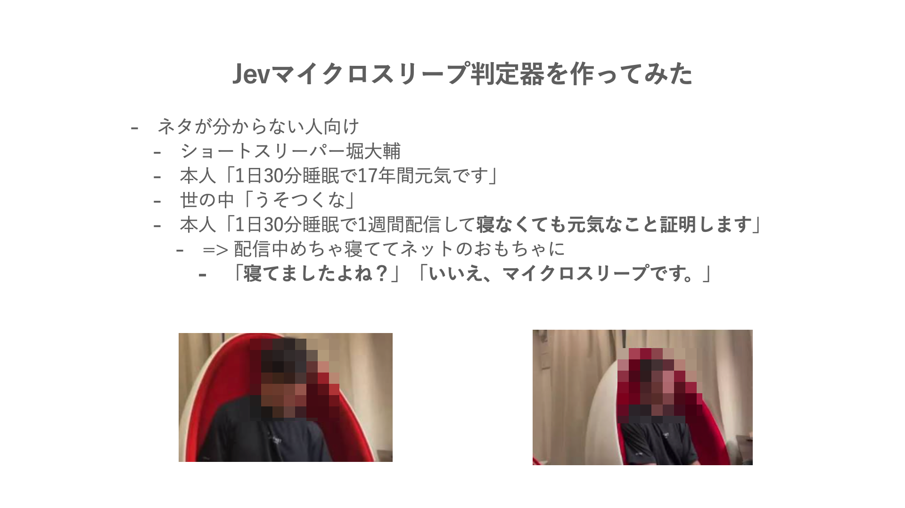
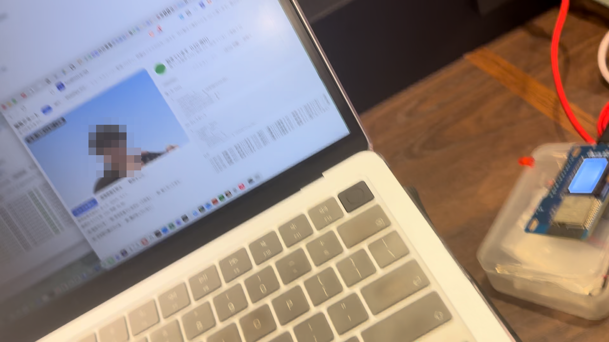
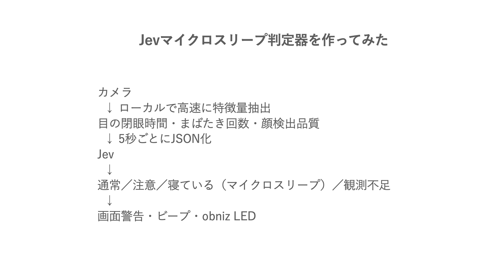
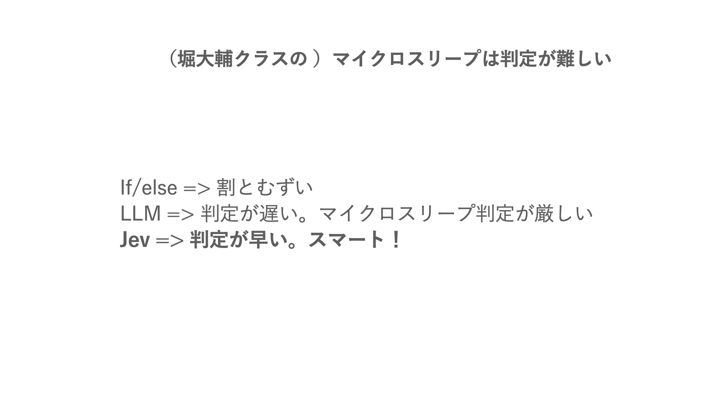
![const result = await env.AI.run("typesafe/jev", { state: { eyesClosedRatio: 0.72, // ← MediaPipeの目情報から計算 longestClosureSeconds: 3.8, // ← MediaPipe + JavaScriptで集計 currentClosureSeconds: 2.4, // ← JavaScriptで計測 blinkCount: 4, // ← MediaPipeの目情報から計算 trackingQuality: 0.93, // ← MediaPipeの検出品質 observationSeconds: 5, // ← JavaScript側の観測時間 }, questions: { isAsleep: { // ← Jevに質問 type: "noul", instructions: "Is this person likely asleep based on the eye-closing signals?", criteria: { true: "The eyes stay closed for several seconds and blinking has stopped.", false: "The eyes open normaly, or the evidence is insufficient.", }, }, drowsinessLevel: { // ← Jevに質問 type: "score", instructions: "How drowsy is this person based only on the observed signals?", criteria: [ "Awake", "Getting drowsy", "Very drowsy", "Asleep", ], }, }, });](images/p11.png)
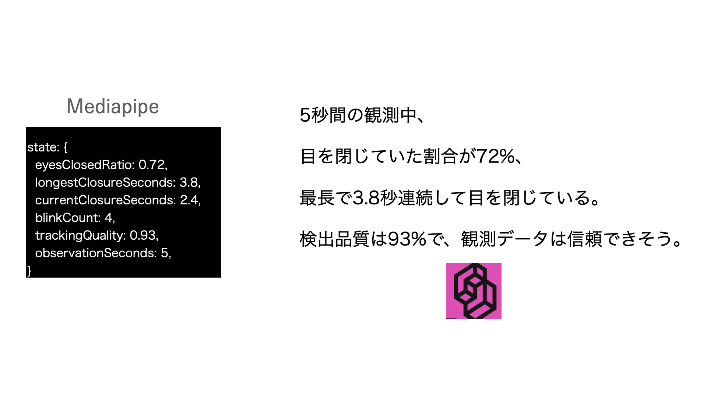
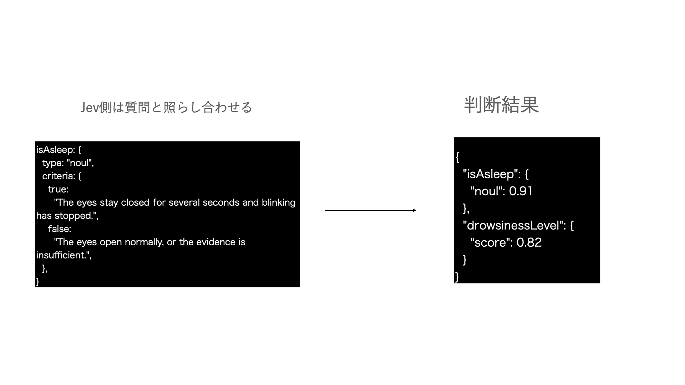
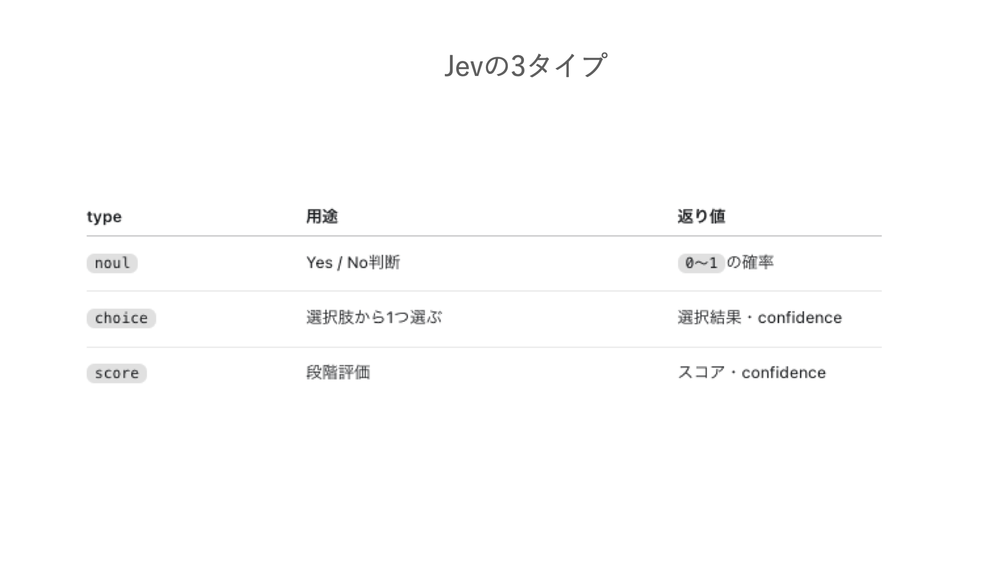
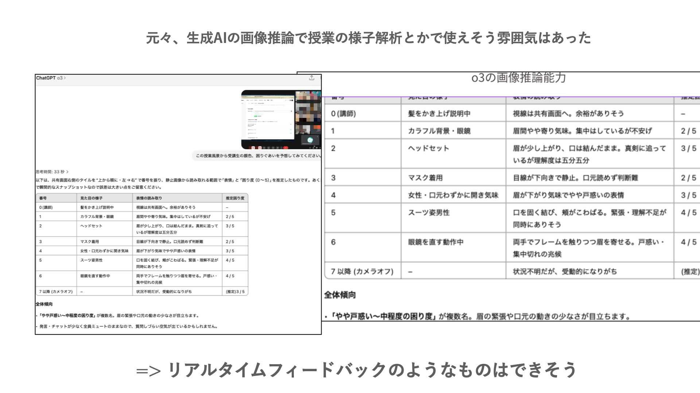
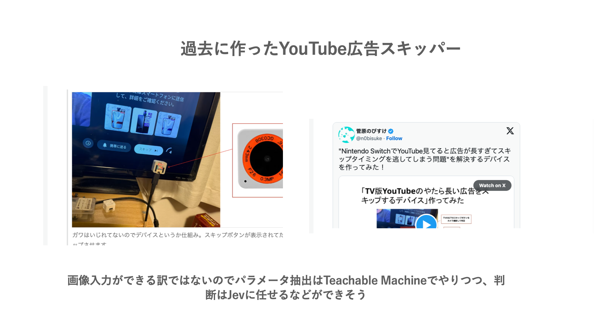
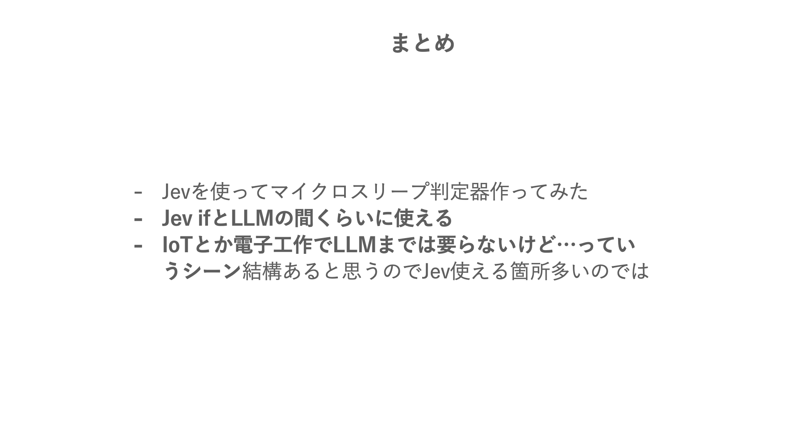












